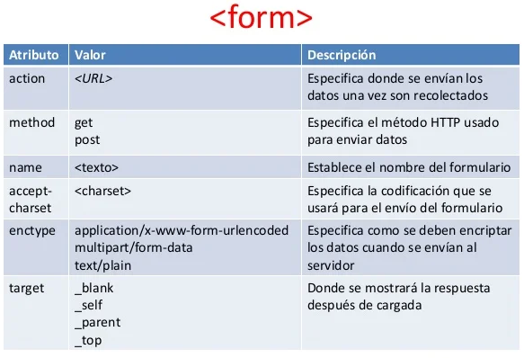
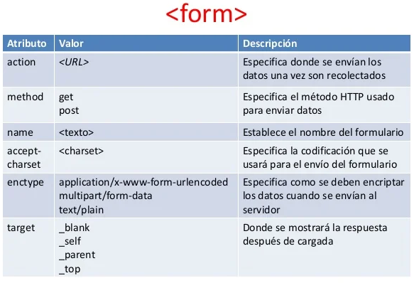

Fundamentos de HTML,Interaccion humano ordenador.
El documento empieza con un elemento de tipo de documento o doctype. Este elemento describe el tipo de HTML que se utiliza para que los agentes de usuario puedan determinar cómo se debe interpretar el documento y saber si sigue las normas que dice que seguirá.
Como ya hemos visto, un elemento básico en HTML consiste en dos marcadores al principio y al final de un bloque de texto. Hay algunos elementos que no rodean al texto y, en la mayoría de los casos, los elementos pueden contener subelementos (como html que contiene head y body en el ejemplo anterior).
La Interacción Humano-Computadora (HCI), es el estudio de la interacción entre el ser humano, las computadoras y las tareas que se desarrollan; principalmente se enfoca a conocer cómo la gente y las computadoras pueden interactuar para llevar a cabo tareas por medio de sistemas y software.
En el contexto de la Interacción Humano-Computador, se establece cierta claridad acerca de qué es una interfaz. En sus orígenes se hablaba de un dispositivo físico que permitía conectar dos sistemas diferentes. El Dictionary of Computing (Oxford Science Publications) define la interfaz como el "Límite en común entre dos sistemas, dispositivos o programas" (Kauffman; 1995)
Las distintas teorías y modelos asociados al diseño de interfaces gráficas han llevado a confusiones acerca de qué sucede durante la interacción y cómo llevar a cabo este diseño orientado al usuario.
Los computadores vistos desde la perspectiva de su uso como medios digitales son actualmente una herramienta idónea para permitir la interacción entre personas, sin embargo, se requiere diseñar soluciones computacionales que cumplan los requerimientos de usabilidad y sociabilidad que el usuario espera obtener (Preece, 2001).
 

Cattafi, R., & Zambrano, N. (2008). Comunicación colaborativa: aspectos relevantes en la interacción humano-humano mediada por la tecnología digital. Enlace, 5(1), 47-63.